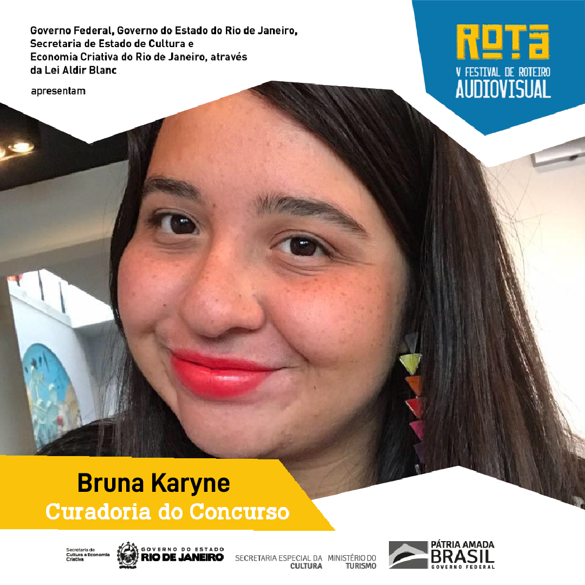
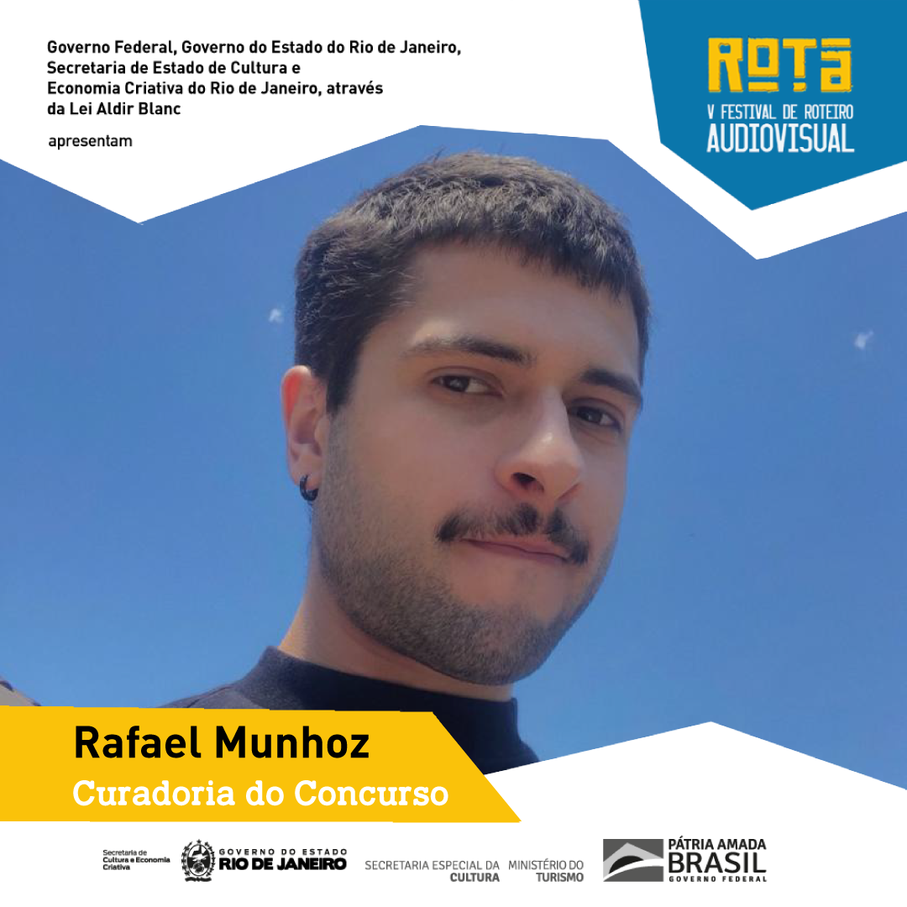

Descrição
Parabéns aos vencedores do Concurso de Roteiros de Curtas
Melhor Roteiro
DIEGO ALEXANDRE DA SILVA
“Vida Boneca”
Melhor Personagem
FERNANDA ZANCOPÉ e STEFANI MOTA
“Loucuras de Amor, Telemensagens”
Melhor Diálogo
IEDA LAGOS
“Flor e o Jequitibá”
Menção Honrosa
CAUÊ PROCÓPIO
“O Querer”
Prêmio ROTA/CABÍRIA
Melhor Protagonista Feminina
VANISE CARNEIRO
“Tudo que Cresce e Voa”
Roteirista Homenageada do Ano
MELANIE DIMANTAS
Parabéns aos finalistas do Concurso de Roteiros:
MELHOR ROTEIRO
- Diego Alexandre da Silva (Rio de Janeiro/RJ) - VIDA BONECA
- Kimberly Palermo Eiras (Nova Iguaçu/RJ) - O VULCÃO
- Maria Clara Gomes Bruno (Nova Iguaçu/RJ) - ONDE TODA MULHER AMARIA SE AFOGAR
- Paulinho Uda (São Paulo/SP) - O FANTASMA DO RETROVISOR
- Soraya Helena (Ribeirão Preto/SP) - PIRANHA, EU TE AMO
MELHOR PERSONAGEM
- Bruno Galindo e Mayara Pereira de Souza (São Paulo/SP) - AYAN
- Fernanda Zancopé e Stefani Mota (São Paulo/SP) - LOUCURA DE AMOR, TELEMENSAGENS
- Guilherme de Souza Demaria (São Paulo/SP) - DODO
- Kimberly Palermo Eiras (Nova Iguaçu/RJ) - O VULCÃO
- Leon Barbero (São Paulo/SP) - DELAY
MELHOR DIÁLOGO
- Cauê Procópio (São Paulo/SP) - O QUERER
- Ieda Lagos (Belo Horizonte/MG) - FLOR E O JEQUITIBÁ
- Kimberly Palermo Eiras (Nova Iguaçu/RJ) - O VULCÃO
- Leonardo Valverde (Salvador/BA) - BICHA, VÁ FAZER UMA TERAPIA
- Soraya Helena (Ribeirão Preto/SP) - PIRANHA, EU TE AMO
MELHOR PROTAGONISTA FEMININA (Prêmio ROTA/CABÍRIA)
- Luísa Prado Betti Guarnieri (São Paulo/SP) - ESTRELAS DE UM SÓ HIT
- Tábata Clarissa de Morais (Recife/PE) - QUATRO PONTES
- Vanise Carneiro (São Paulo/SP) - TUDO O QUE CRESCE E VOA
Parabéns aos semifinalistas do Concurso de Roteiros:
MELHOR ROTEIRO
Cristiane Teotônio Moioli (São Paulo/SP) - NOSSA ÁRVORE
Diego Alexandre da Silva (Rio de Janeiro/RJ) - VIDA BONECA
Guss de Lucca (Campinas/SP) - O DIABO A QUATRO
Luciana Leitão Santos (Salvador/BA) - TURQUESA
Maria Clara Gomes Bruno (Nova Iguaçu/RJ) - ONDE TODA MULHER AMARIA SE AFOGAR
Maritza Muniz dos Santos (Curitiba/PR) - PANELA DE PRESSÃO
Paulinho Uda (São Paulo/SP) - O FANTASMA DO RETROVISOR
Pedro Bini (São Paulo/SP) - BRINCADEIRA
Ricardo Garcia (São Paulo/SP) - AMEI TE VER
Soraya Helena (Ribeirão Preto/SP) - PIRANHA, EU TE AMO
MELHOR PERSONAGEM
Alice Proença (Montes Claros/MG) e Arthur Quadra (Belo Horizonte/MG) - GRITAR É SOBREVIVER!
Bruno Galindo e Mayara Pereira de Souza (São Paulo/SP) - AYAN
Eduardo Resing (São Paulo/SP) - A MÃO COBRINDO OS OLHOS
Fernanda Zancopé e Stefani Mota (São Paulo/SP) - LOUCURA DE AMOR, TELEMENSAGENS
Guilherme de Souza Demaria (São Paulo/SP) - DODO
Ieda Lagos (Belo Horizonte/MG) - FLOR E O JEQUITIBÁ
Leon Barbero (São Paulo/SP) - DELAY
Maritza Muniz dos Santos (Curitiba/PR) - PANELA DE PRESSÃO
Soraya Helena (Ribeirão Preto/SP) - PIRANHA, EU TE AMO
Victor Germano (Recife/PE) - PASSA O TEMPO E MATA A FOME
MELHOR DIÁLOGO
Álvaro Oliveira Paixão (Rio de Janeiro/RJ) - O GOLPE
Cauê Procópio (São Paulo/SP) - O QUERER
Cauê Procópio (São Paulo/SP) - ORGIA, GUERRA E PAZ
Eduardo Resing (São Paulo/SP) - A MÃO COBRINDO OS OLHOS
Ieda Lagos (Belo Horizonte/MG) - FLOR E O JEQUITIBÁ
Kimberly Palermo Eiras (Nova Iguaçu/RJ) - O VULCÃO
Leonardo Valverde (Salvador/BA) - BICHA, VÁ FAZER UMA TERAPIA
Paulinho Uda (São Paulo/SP) - O FANTASMA DO RETROVISOR
Soraya Helena (Ribeirão Preto/SP) - PIRANHA, EU TE AMO
Thaís Mandarino (Rio de Janeiro/RJ) - ESTUDO PARA QUATRO MÃOS
MELHOR PROTAGONISTA FEMININA (Prêmio Cabíria)
Aline Pinheiro da Cunha e Mariana Polo Garotti (São Paulo/SP) - SELMA E LUIZA
Ana Laryssa Gomes Lopes (Brasília/DF) - A PRIMEIRA DANÇA DO RESTO DE NOSSAS VIDAS
Fernanda Zancopé e Stefani Mota (São Paulo/SP) - LOUCURA DE AMOR, TELEMENSAGENS
Gabrielly Oliveira de Souza e Patrick Hanser (São Paulo/SP) - CICATRIZ
Geovana Pimentel (Recife/PE) - UMA HISTÓRIA SOBRE AMOR
Luísa Prado Betti Guarnieri (São Paulo/SP) - ESTRELAS DE UM SÓ HIT
Selma Maria Kuasne (São Paulo/SP) e Pedro Vargas Cunha (Cotia/SP) - A MENINA CHEIA DE CORES
Soraya Helena (Ribeirão Preto/SP) - PIRANHA, EU TE AMO
Tábata Clarissa de Morais (Recife/PE) - QUATRO PONTES
Vanise Carneiro (São Paulo/SP) - TUDO O QUE CRESCE E VOA
Governo Federal, Governo do Estado do Rio de Janeiro, Secretaria de Estado de Cultura e Economia Criativa do Rio de Janeiro, através da Lei Aldir Blanc apresentam o V ROTA – Festival de Roteiro do Audiovisual, selecionado pelo Edital de Chamada Emergencial de Premiação nº 04/2020 “FOMENTA FESTIVAL RJ”, que dispõe sobre a premiação financeira de festivais realizados no Estado do Rio de Janeiro. Com isto, a produção do ROTA tem o prazer de oferecer premiação em dinheiro, conforme o Regulamento abaixo:
Inscrições de 20 de janeiro a 03 de fevereiro de 2021
LEIA TODO O REGULAMENTO ANTES DE ENVIAR SUA INSCRIÇÃO
O Concurso de Roteiro de Curtas-metragens tem o objetivo de promover, através de premiação, roteiros de curtas de ficção inscritos por estudantes e iniciantes brasileiros e maiores de idade e, assim, abrir portas para sua eventual realização.
Os roteiros concorrerão nas seguintes categorias:
-melhor roteiro,
-melhor personagem,
-melhor diálogo,
-melhor protagonista feminina (certificado Cabíria).
Os roteiros serão avaliados em duas etapas:
Etapa 01: vinte curadores selecionarão até 30 roteiros indicados para as 3 categorias do prêmio: melhor roteiro, melhor personagem e melhor diálogo, e as indicadas para o Prêmio ROTA/Cabíria de Melhor Protagonista Feminina.
Etapa 02: cinco jurados do ROTA escolherão os vencedores do concurso nas 3 categorias. E os jurados do Prêmio Cabíria escolherão a vencedora na categoria de Melhor Protagonista Feminina.
Tanto a curadoria quanto o júri do concurso serão compostos por profissionais reconhecidos da área. Premiação: além de troféus, o Concurso de Roteiros de Curtas do V ROTA premiará seus vencedores com consultorias, oficinas e traduções oferecidas pelos parceiros do Festival e uma premiação no valor de R$1.000,00 (mil reais), sujeito à retenção de impostos, para o vencedor da categoria Melhor Roteiro.
Para a edição do V ROTA são esperadas novas parcerias e premiações.
Dúvidas e sugestões? Envie email para rotaconcurso2021@gmail.com.
Convidados
-
BENJAMIN FIGUEREDO
Curador
Marcus Benjamin Figueredo é cineasta independente e estudante de Audiovisual na Universidade de Brasília. Já roteirizou e dirigiu quatro filmes, 'O Animal' (2017), 'Ando meio desligado' (2018), o documentário experimental 'Sobre as cigarras' (2019) e 'Marginália Carne' (2020). Além disso, é pesquisador e já atuou como editor de clipes musicais e produtor em festivais de cinema universitário.
-
BERNARDO TAVARES ROSA
Curador
Bernardo Tavares Rosa formou-se em Cinema pela PUC-Rio e é mestrando em Artes da Cena na UFRJ. Estudou Teatro na Universidade de Leeds e Roteiro na Academia Internacional de Cinema e na Roteiraria. Participou de Oficina de Realização na Mostra Tiradentes e seu roteiro "Rita tem horror à noite" foi selecionado para o MetrôLab 2020. Atualmente, finaliza seu primeiro curta documental "O céu de lá", selecionado para o laboratório de montagem do Festival Brasileiro de Cinema Universitário.
-
BRENO RIBEIRO
Curador
Breno Ribeiro é graduado em Letras pela UFRJ. Formado em Formação Livre de Roteiro e em Direção Cinematográfica pela Academia Internacional de Cinema, onde escreveu os curtas “Inóspito” e “Tempo Integral”. Ele é um dos criadores da série de comédia "Retorno de Saturno" e autor do longa adolescente "Revoada", além de ser um dos sócios da Cosmonauta Produções.
-
BRUNA KARYNE
Curadora
 Formada em Cinema pela PUC-RIO e Produção Audiovisual pela AIC, Bruna Karyne é escritora, roteirista e produtora. Desde 2019, é diretora de produção da websérie infanto-juvenil ‘’Marotos: uma história’’, indicada a 7 prêmios no Rio Web Fest 2020 - incluindo Melhor Elenco e Melhor Ator - e curadora do Cabíria Prêmio de Roteiro na categoria piloto série-ficção. Atualmente, cursa mestrado em Cinema pela UFF, onde estuda a representação do prazer sexual feminino nas telas.
-
CAMILA CRISTO SALES
Curadora
Camila Sales é publicitária de formação, pós graduada em Cinema pela universidade Belas Artes de SP e também em pós graduada em Roteiro pela FAAP. Trabalha atualmente como Brand Manager e também fez parte do Festival Internacional de Direitos Humanos, Entretodos. Escreveu recentemente o longa-metragem “Primavera”, o projeto de série “Aos trinta” e os curtas-metragens “O Aniversário de Minha Mãe” e “Coisas da Vida”. Em paralelo, roteiriza um projeto audiovisual voltado para mulheres que visa compartilhar e trocar experiências sobre o mercado de trabalho, incluindo transições de carreira”
-
CAMILA ELIAS
Curadora
 Camila Elias é jornalista, formada pela Escola de Comunicação da UFRJ, e integra grupos de estudo e prática de roteiro. Em 2020, foi semifinalista do Prêmio Cabíria, na categoria série documental. Atua há mais de 15 anos no mercado jornalístico e audiovisual como repórter, pesquisadora, redatora e editora, com passagens pela Infoglobo, TV Globo e Festival do Rio. Atualmente, está desenvolvendo um roteiro de série de não-ficção e é editora de conteúdo digital do reality Big Brother Brasil 21.
Camila Elias é jornalista, formada pela Escola de Comunicação da UFRJ, e integra grupos de estudo e prática de roteiro. Em 2020, foi semifinalista do Prêmio Cabíria, na categoria série documental. Atua há mais de 15 anos no mercado jornalístico e audiovisual como repórter, pesquisadora, redatora e editora, com passagens pela Infoglobo, TV Globo e Festival do Rio. Atualmente, está desenvolvendo um roteiro de série de não-ficção e é editora de conteúdo digital do reality Big Brother Brasil 21.
-
CAROL ARAÚJO
Curadora
Documentarista, assistente de direção e pesquisadora há 10 anos. Dirigiu 02 documentários: ”Questão de Honra” e “Corpo Manifesto”. O último, sobre a nova onda feminista do Brasil, percorreu festivais nacionais e internacionais, ganhou em 2018 o prêmio de melhor média-metragem no 3º London Feminist Film Festival e foi, em 2019, o filme de abertura do 31º Cineffable, em Paris. Seu projeto de ficção "A Delegacia" foi finalista no ROTA/2020. Formada em História pela UFMS.
-
CAROLINA GUIMARÃES
Curadora
CAROLINA GUIMARÃES | Pós-graduada em MBA em Cinema pela Faculdade Max Planck em parceria com o LA Film Institute, em São Paulo, é bacharela em Artes Cênicas pela Universidade Federal de Ouro Preto – UFOP, em Minas Gerais, com habilitação em Direção. Trabalhou como Diretora Assistente ao lado de grandes diretores como Marcelo Marcus Fonseca, David Rock e, o especialista em Nelson Rodrigues, Marco Antonio Braz. Como diretora, junto ao Teatro Condensado, montou as obras Menino Maluquinho…Mais Um, FORT (inspirado na obra de Hamlet), Projeto #Resumão, Leitura Dramática A Onça e o Coelho, de Plínio Marcos, Toda Nudez Será Castigada de Nelson Rodrigues, Fala Comigo, baseado na obra de Tennessee Williams. Além de assinar a direção e fotografia de diversos curta-metragens.
-
DELLES SASSI
Curadora
Graduada em Cinema & Audiovisual pelas Faculdades Integradas Barros Melo (2019), atualmente especializa-se em desenvolvimento de narrativas seriadas e escrita criativa. Tem experiência na área de Artes, com ênfase em Roteiro e Direção Cinematográfica, tendo o Trabalho de Conclusão de Curso aprovado com nota máxima, qual abordou conceitos e estratégia prática da escrita de roteiro para séries atribuindo-se da adaptação literária.
-
DIOGO CAVALCANTI
Curador
Formado em Cinema pela Puc, com vários cursos de roteiro e documentário na bagagem, já apresentei podcast sobre filmes, trabalhei com produção, tenho um clube de leitura, vim morar no Canadá e estou cheio de saudade de ler uns roteiros nacionais.
-
ERIKA FERREIRA
Curadora
Roteirista e criadora de conteúdo com mais de 14 anos de experiência nas áreas de comunicação institucional e branded content. A esta experiência, alia conhecimentos em produção audiovisual e criação de conteúdo para novas mídias. Primeiro lugar da edição 2020 do Prêmio Cabíria – Mulheres & Audiovisual, na categoria argumento infanto-juvenil.
-
ESTÊVÃO MENEGUZZO
Curador
 Estevão Meneguzzo com estudos em Cinema, Filosofia e pós-graduado em preparação corporal nas artes cênicas pela Faculdade de Dança Angel Vianna, atuou no mercado audiovisual como Assistente de Direção por muitos anos. Na transição para a Direção atuou também como pós produtor e editor na área de entretenimento de grandes produtoras no Rio de janeiro. Atualmente sócio da Cajamanga Filmes, é responsável pela pós produção e direção audiovisual da produtora. Valentina é seu primeiro curta-metragem de ficção seguido do curta-metragem documental Juliana na Cinemateca lançado no segundo semestre de 2017. Em paralelo a frente da Cajamanga, pós produziu uma diversidade de longas e séries como: Arcanjo Renegado (Globoplay) , Animal Amarelo (Fic) , Especial de Natal (Porta dos Fundos), Em busca de Anselmo (HBO America Latina), Carro Rei (Longa Fic), Aboliçao (Longa Doc).
Estevão Meneguzzo com estudos em Cinema, Filosofia e pós-graduado em preparação corporal nas artes cênicas pela Faculdade de Dança Angel Vianna, atuou no mercado audiovisual como Assistente de Direção por muitos anos. Na transição para a Direção atuou também como pós produtor e editor na área de entretenimento de grandes produtoras no Rio de janeiro. Atualmente sócio da Cajamanga Filmes, é responsável pela pós produção e direção audiovisual da produtora. Valentina é seu primeiro curta-metragem de ficção seguido do curta-metragem documental Juliana na Cinemateca lançado no segundo semestre de 2017. Em paralelo a frente da Cajamanga, pós produziu uma diversidade de longas e séries como: Arcanjo Renegado (Globoplay) , Animal Amarelo (Fic) , Especial de Natal (Porta dos Fundos), Em busca de Anselmo (HBO America Latina), Carro Rei (Longa Fic), Aboliçao (Longa Doc).
-
FILIPE ISENSEE
Curador
Formado em Jornalismo pela PUC Minas, com mestrado em Cinema e Audiovisual pela UFF, Filipe Isensee é também roteirista e dramaturgo. Já teve projetos de ficção finalistas e semifinalistas em concursos como Frapa e Rota e selecionados para Laboratórios da Darcy Ribeiro e da Semana Audiovisual Primeiro Plano. Integrou a quinta turma do Núcleo de Dramaturgia Firjan Sesi. É autor de "cão gelado", peça que será publicada pela editora Cobogó no primeiro semestre de 2021. Atualmente, trabalha como pesquisador de conteúdo da TV Globo.
-
FILIPPO PITANGA
Curador
 Crítico e curador de cinema, jornalista e advogado. Mestrando em Comunicação na UFRJ e pós-graduado em cinema. Professor na Academia Internacional de Cinema e Sesc. Membro da ACCRJ e filiado à FIPRESCI. Organizador do FICA.VC. Programador da Sessão Estação Net. Colunista da Revista Fórum e Carta Capital. Podcast Cinema em Série. Editor-chefe do Almanaque Virtual.
Crítico e curador de cinema, jornalista e advogado. Mestrando em Comunicação na UFRJ e pós-graduado em cinema. Professor na Academia Internacional de Cinema e Sesc. Membro da ACCRJ e filiado à FIPRESCI. Organizador do FICA.VC. Programador da Sessão Estação Net. Colunista da Revista Fórum e Carta Capital. Podcast Cinema em Série. Editor-chefe do Almanaque Virtual.
-
GAUTIER LEE
Curador
 Gautier Lee é roteirista, diretora e crítica de cinema formada pela PUCRS. É uma das fundadoras do Macumba Lab, coletivo de profissionais negros do audiovisual gaúcho.
Em 2019, foi vencedora do prêmio Cabíria e participou do Laboratório de Narrativas Negras da FLUP.
Em 2020, dirigiu o curta Desvirtude, tornou-se membro da Organization of Black Screenwriters, desenvolveu um curta-metragem e um piloto de série em cursos do Sundance Institute, além de ser finalista do Sir Peter Ustinov Scriptwriting Award, prêmio de roteiro concedido pela Internacional Academy of Television Arts and Science.
Atualmente está desenvolvendo seu segundo longa e é diretora-geral do Fade to Black Festival.
Gautier Lee é roteirista, diretora e crítica de cinema formada pela PUCRS. É uma das fundadoras do Macumba Lab, coletivo de profissionais negros do audiovisual gaúcho.
Em 2019, foi vencedora do prêmio Cabíria e participou do Laboratório de Narrativas Negras da FLUP.
Em 2020, dirigiu o curta Desvirtude, tornou-se membro da Organization of Black Screenwriters, desenvolveu um curta-metragem e um piloto de série em cursos do Sundance Institute, além de ser finalista do Sir Peter Ustinov Scriptwriting Award, prêmio de roteiro concedido pela Internacional Academy of Television Arts and Science.
Atualmente está desenvolvendo seu segundo longa e é diretora-geral do Fade to Black Festival.
-
GUSTAVO ARAÚJO
Curador
Gustavo Araujo é graduando em Cinema e Audiovisual pela Universidade Federal Fluminense, com interesse voltado ao estudo e pesquisa de roteiro e narrativas. Atualmente está como um dos monitores da disciplina de Argumento e Roteiro de seu curso. E também, colabora, junto a demais colegas, na produção e programação da Mostra de Filmes Universitários da UFF, a UFFilme.
-
HELENA SARDINHA
Curadora
Formada em Cinema pela New York Film Academy, em Los Angeles, Helena Sardinha é uma produtora com vasta experiência em cinema, televisão, e performance. Helena produziu mais de 10 projetos, com mais de 40 prêmios e indicações, trabalhando com clientes como Grubhub, LA Fashion Week, Future, Role Model e Max Hershenow. Desde 2018, ela gerencia Driven Equation, uma produtora audiovisual com sede em Los Angeles e São Paulo. Além de trabalhar com desenvolvimento e produção, Helena também dá aulas de cinema. Atualmente, ela é membro do corpo docente do Sitka Arts Fine Camp, em Sitka, Alasca.
-
LEONARDO BRUNO
Curador
 Leonardo Bruno é jornalista, escritor e roteirista. É autor de 3 livros na área de música e cultura popular: “Zeca Pagodinho – Deixa o samba me levar”, “Explode, coração – Histórias do Salgueiro” e “Cartas para Noel – Histórias da Vila Isabel”. Atua há mais de 20 anos no mercado jornalístico carioca, com passagem pela Infoglobo nas funções de editor-chefe, gerente de negócios, repórter e colunista. Concluiu a Formação de Roteiristas da “Roteiraria” e a MasterClass de Aguinaldo Silva. Teve roteiros de ficção selecionados para os laboratórios do Festival de Cinema Francês Varilux e da Escola de Cinema Darcy Ribeiro. Atualmente, desenvolve roteiros para um documentário sobre Beth Carvalho e para duas séries de não-ficção do Canal Bis.
Leonardo Bruno é jornalista, escritor e roteirista. É autor de 3 livros na área de música e cultura popular: “Zeca Pagodinho – Deixa o samba me levar”, “Explode, coração – Histórias do Salgueiro” e “Cartas para Noel – Histórias da Vila Isabel”. Atua há mais de 20 anos no mercado jornalístico carioca, com passagem pela Infoglobo nas funções de editor-chefe, gerente de negócios, repórter e colunista. Concluiu a Formação de Roteiristas da “Roteiraria” e a MasterClass de Aguinaldo Silva. Teve roteiros de ficção selecionados para os laboratórios do Festival de Cinema Francês Varilux e da Escola de Cinema Darcy Ribeiro. Atualmente, desenvolve roteiros para um documentário sobre Beth Carvalho e para duas séries de não-ficção do Canal Bis.
-
LUCAS DELFIN
Curador
Psicólogo formado pela UNIFESP, escreve muita coisa desde a adolescência e começou a estudar cinema e audiovisual por conta própria em 2017. De lá para cá, escreveu, dirigiu e produziu um curta independente, que foi finalista do concurso de roteiros do II ROTA, e atualmente pré-produz seu segundo curta, cujo roteiro venceu na categoria Melhor Diálogo no IV ROTA. Dedica-se também ao desenvolvimento de um projeto de série que foi vencedor em 2020 do Concurso Novos Roteiros Originais, da Organização dos Estados Iberoamericanos.
-
MAGNO PINHEIRO
Curador
Cineasta baiano formado em Direção Cinematográfica pela Escola de Cinema Darcy Ribeiro onde realizou diversos curtas enquanto estudante. Dentre eles, "Lilith", foi um dos representantes no estande brasileiro no Festival Internacional de Curtas de Clermont-Ferrand na França. Seu último curta, "Avoada", foi um dos indicados ao Grande Prêmio do Cinema Brasileiro em 2020 e seu primeiro roteiro de longa , " O Massacre de Realengo" foi vencedor do Laboratório para Roteiristas Estreantes em 2018 e do Concurso Novos Roteiros Originais realizado pela OEI em 2020.
-
MAÍRA OLIVEIRA
Curadora
Maíra Oliveira é escritora, dramaturga e roteirista com experiência no desenvolvimento de longa-metragem e séries ficcionais na Rede Globo, Pródigo, A Fábrica, Migdal Filmes e Panorâmica. Autora do livros "Que saudade da minha vó", "Mari, a sementinha" e das antologias "Vértice: escritas negras", "Favela em mim" e "Narrativas Negras". Assina a dramaturgia dos espetáculos teatrais "Yabá: Mulheres Negras" (Direção de Luiza Loroza e Rodrigo França) e "Duas Fridas" (Direção de Gizelly de Paula, Orientação de Ana Kfouri). Em 2019, dirigiu seu primeiro filme "Encruza", selecionado para o 12º Encontro de Cinema Negro Zózimo Bulbul entre outros, disponível no SPCinePlay. Atualmente é roteirista do Quintal TV (Delicatessen/Canal Futura) além de colaborar no desenvolvimento de dois longas-metragem para Amazon Prime. Orientadora no Laboratório de Novos Talentos da Gullane e professora na Roteiraria. Presidente da Associação Brasileira de Autores e Roteiristas (ABRA).
-
MARIA IANNE
Curadora
Nascida no interior do Rio de Janeiro, graduanda em Cinema e Audiovisual pela UFF e encantada por narrativas audiovisuais. Roteirizou e dirigiu o curta-metragem "Mudanças", foi finalista na categoria "Melhor Protagonista Feminina" no ROTA 2020 e participou da sala de roteiro da websérie DESCONSTRUÍDA, com estreia prevista para 2021. Acredita na possibilidade do cinema de abrir portas e transformar realidades.
-
PEDRO MAIA
Curador
Me chamo Pedro Maia, tenho 25 anos e estou prestes a me graduar em Audiovisual pela USP. Sempre fui um apaixonado por filmes e por tudo que os envolve; não por acaso sou um dos curadores do Instagram @digalaumfilme, criado e produzido por mim e alguns amigos. Ser um dos curadores da mostra do Festival Rota será uma experiência única e espero realizar um trabalho digno do festival.
-
RADHI MERON
Curadora
Roteirista, animadora e educadora formada em Educomunicação pela Escola de Comunicações e Artes da USP. Colaborou como roteirista no programa infantil "Quintal da Cultura" (TV Cultura). Em seu trabalho autoral constam algumas obras premiadas como o curta metragem "Peripatético" (2016), prêmio de melhor roteiro no Festival de Brasília do cinema Brasileiro, o argumento “Mabel e Sara” (2018), primeiro lugar no Concurso LATAM para estudantes do Brasil e da Flórida em 2018, e o roteiro “Minha mãe não abre a porta” (2019) que recebeu o o prêmio ROTA/CABÍRIA de melhor protagonista feminina em 2019. Atualmente está finalizando o curta metragem "Aurora, a rua que queria ser um rio".
-
RAFAEL MUNHOZ
Curador
 Especialista em Desenvolvimento de Projetos Audiovisuais pela PUCRS, atua nas áreas de roteiro e produção desde 2019. No mesmo ano, fundou a Desmanche Filmes junto de três colegas, produzindo e roteirizando videoclipes para artistas da cena local porto alegrense, além de fazer parte da equipe de comunicação e vídeo do festival Cine Esquema Novo. Em 2020, roteirizou “Eu sou bicho egoísta”, seu primeiro curta-metragem fora da faculdade, agora em fase de finalização.
-
RAYANE TELES
Curadora
Rayane Teles é baiana, roteirista, diretora e assistente de direção. Escreveu e dirigiu o documentário Pinote (2021). Escreveu o projeto de longa metragem O Canto da cigarra que foi selecionado para participar do Laboratório de Projetos do Nordeste Lab (2020), sendo premiado durante o pitching com três prêmios: contrato de Distribuição com a Vitrine Filmes, Ida ao Festival de San Sebastián (Espanha) + assessoria de preparação, Anuidade do Programa Cinema do Brasil; selecionado para participar do Laboratório Griot (2020); Selecionado na categoria de desenvolvimento no Programa Aldir Blanc/Prêmio das artes Jorge Portugal. Seu roteiro de curta metragem O ovo foi selecionado para participar do Laboratório de Projetos do Incuba Filmes (2020); selecionado na categoria de produção no Programa Aldir Blanc/Prêmio das artes Jorge Portugal. Escreveu o argumento do curta Doce de Tacho que ficou em primeiro lugar do pitching de curtas metragens realizado pelo Encontro de cinema negro Zózimo Bulbul (2020). Atualmente está trabalhando como roteirista colaboradora no Projeto Memórias de Sangue: O vampiro que descobriu o Brasil, série televisiva selecionada no Edital de 2018 de Desenvolvimento de Roteiro do Ministério da Cultura com o tema 200 Anos da Independência do Brasil.
-
REJANE NEVES
Curadora
Rejane Neves (Diretora/ Roteirista/Produtora) formada em direção na Escola de Cinema Darcy Ribeiro; Mestre em Linguística (UFRJ); Letras (UFRJ) e membro da APAN (Associação dos Profissionais do Audiovisual Negro). Foi diretora, roteirista e produtora do curta "Dois Pesos”, selecionado diversas mostras e disponível no Spcineplay. Argumento selecionado no "Lab. Narrativas Negras para Audiovisual da FLUP," parceria Rede Globo (2019). Assistente de produção das séries: "Um dia Qualquer" (canal Space, 2020). "Palmares: Coração brasileiro, Alma africana" (canal Curta! 2019).
-
TAÍS ESPÍRITO SANTO
Curadora
Taís Espírito Santo é cria de Campo Grande, Zona Oeste do Rio de Janeiro. Filha de Isabel e Francisco, desde pequena amava ler e escrever em diários. É escritora, assessora literária e gestora cultural. Participou da coletânea “Olhos de Azeviche: dez escritoras negras que estão renovando a literatura brasileira”, Editora Malê, 2017; Em 2019 teve o seu poema Radinho, criado através da arte de Cau Luis, no livro Favela em Mim, da Orikí Editora; em 2020, participou do livro Narrativas Negras-Biografias ilustradas de mulheres pretas brasileiras, da Editora Voo. É coordenadora de cultura das Josefinas Colab. É mulher cheia de axé, resoluta, sorriso largo e de bem com a vida. E, neste ano, lançará o livro infantil pela Editora Malê. Participou do Kbela, o filme, de Yasmin Thayná. Em 2019 realizou o curso de oficina de séries com o professor José Carvalho e de roteiro e diversidade do Michel Carvalho, na Roteiraria.
-
VILMA CARLA MARTINS
Curadora
Mestre em comunicação e cultura na linha de Análise fílmica. Jornalista e produtora audiovisual, atuando em obras como o Curta Sujeito Objeto; Curta A Mulher no Fim do Mundo; Curta Facão; e o quinto episódio da websérie Punho Negro. É Membro da APAN. Foi aluna do Curso Livre de Cinema da UFBA - 2 edição e recentemente fez o “Taller de Cine Autorreferencial” na EICTV- Cuba e qualificação de Roteiro no Curso Cinema e Pensamento do Centro Afrocarioca de Cinema Negro. Desde 2017 integra o coletivo de audiovisual Sujeito Filmes. Roteirista e diretora do Curta 5 Fitas.
-
WARLLEM AQUINO
Curador
Warllem tem 33 anos, é bacharel em Filosofia e pós-graduado em Roteiro de Ficção Audiovisual pelo Senac. Apaixonado por filmes desde criança, começou a estudar roteiros por conta própria desde 2008. Sempre em busca de conhecimento e novas experiências, acompanhou o trabalho de roteiristas experientes no Laboratório Novas Histórias de 2019, e está sempre pronto para participar de novos projetos.
-
AMANDA DRUMONT
Jurada
Amanda Drumont é produtora e roteirista em formação, com cursos na área pela Ritornelo Audiovisual (RJ) e Instituto de Cinema (SP). Em 2020 trabalhou como mediadora na Mostra Quelly de Cinema de Gênero e como crítica cinematográfica da III Mostra Novo Cinema Maranhense. Atualmente está em pré-produção de dois curtas-metragens onde assina o roteiro e em produção de um documentário.
-
GIOVANA MORAES
Jurada
 Giovana tem 44 anos e é paulista. Formada em jornalismo, tem pós-graduação em jornalismo literário e antropologia cultural, e cursa o mestrado em bens culturais e projetos sociais na FGV. Atua na área desde 2003, primeiro como pesquisadora (“Caminho das Índias”, “Amazônia – de Galvez a Chico Mendes”) e depois como roteirista (“A Vida da Gente”, “Além do Horizonte”, “Orgulho e Paixão”). Concorreu ao Emmy pelo webdoc “Eu Só Quero Amar”. Coordena a pós-graduação em roteiro da Universidade Veiga de Almeida. É gerente de conteúdo na empresa SambaCaju.
Giovana tem 44 anos e é paulista. Formada em jornalismo, tem pós-graduação em jornalismo literário e antropologia cultural, e cursa o mestrado em bens culturais e projetos sociais na FGV. Atua na área desde 2003, primeiro como pesquisadora (“Caminho das Índias”, “Amazônia – de Galvez a Chico Mendes”) e depois como roteirista (“A Vida da Gente”, “Além do Horizonte”, “Orgulho e Paixão”). Concorreu ao Emmy pelo webdoc “Eu Só Quero Amar”. Coordena a pós-graduação em roteiro da Universidade Veiga de Almeida. É gerente de conteúdo na empresa SambaCaju.
-
LAURA BARILE
Jurada
Formada em Direção Cinematográfica pela AIC e Jornalismo pela PUC-SP, realiza mestrado pela Universidad del Cine. Integrou a equipe da primeira temporada de “Gaby Estrella”, indicada ao Emmy Kids Awards 2014 e criou a série “Mostra tua cara”, indicada ao Grande Prêmio do Cinema Brasileiro 2019. Desenvolve o projeto de longa "Daragaia Lida", Primeira Menção Especial no Labex Argentina 2019 e, junto à diretora Joana Oliveira, é roteirista de "Ushuaia", bolsa Ibermedia no LabGuion Colômbia 2020.
-
LÍVIA CAMPOS DE MENEZES
Jurada
Lívia Campos de Menezes é bacharel em Relações Internacionais e mestre em História pela UNESP. Lívia atuou como gerente de projetos em diversas empresas, como a Nielsen, antes de voltar sua carreira para o cinema. Em 2014, ela decidiu combinar sua paixão por estórias com a experiência em negócios e se mudou para os EUA, onde fez um mestrado em Produção Criativa na UNC School of the Arts. Lívia já produziu curtas-metragens e trabalhou em festivais, como Sundance e Brazilian Film Market. Atualmente, ela trabalha no desenvolvimento de seu primeiro longa, “Foreign”. Além disso, ela é consultora de roteiros e criadora de conteúdo na Grow Together, uma comunidade criada para apoiar mulheres brasileiras expatriadas.
-
MARINA MEIRA
Jurada
 Com dez anos de atuação no mercado audiovisual, Marina Meira é cofundadora do núcleo de roteiristas Maquinário Narrativo, um dos primeiros do Brasil com foco exclusivo na criação e desenvolvimento de roteiros. Integrou salas de desenvolvimento de séries com produtoras de todo o país. É roteirista do longa-metragem “Ninguém ama ninguém... por mais de dois anos” (Festival do Rio 2015 e 39a Mostra de SP) e do curta de animação “As Aventuras de Pety” (Cacto de Ouro por Melhor Roteiro e Melhor Filme).
Com dez anos de atuação no mercado audiovisual, Marina Meira é cofundadora do núcleo de roteiristas Maquinário Narrativo, um dos primeiros do Brasil com foco exclusivo na criação e desenvolvimento de roteiros. Integrou salas de desenvolvimento de séries com produtoras de todo o país. É roteirista do longa-metragem “Ninguém ama ninguém... por mais de dois anos” (Festival do Rio 2015 e 39a Mostra de SP) e do curta de animação “As Aventuras de Pety” (Cacto de Ouro por Melhor Roteiro e Melhor Filme).
-
PEDRO SALOMÃO
Jurado
 Autor da série “Miúdo Graúdo" (Endemol Portugal, RTP). Roteirista do Canal Like (NET). Roteirista de programas e séries documentais em canais como Arte1 (TecArt), PrimeBoxBrasil (HQuem), PlayTV (O Videogame no Brasil), TV Brasil (Revista do Cinema Brasileiro) e Canal Futura (Cine Conhecimento, Tempo da Terra, etc.). Coordenador de roteiros do programa Globo Educação (TV Globo, Canal Futura). Roteirista colaborador do filme “Bruna Surfistinha” (Melhor Roteiro, Grande Prêmio do Cinema Brasileiro). Game Concept da série de jogos educativos “Chico na Ilha dos Jurubebas” (Melhor Serious Game, XII SBGames e Melhor Produção Transmídia, Prêmio TAL). Mestre em Comunicação pela UFRJ. Coordenador da Formação Livre em Roteiro da AIC RJ. Coordenador Acadêmico da Pós-graduação em Roteiro da UVA. Membro do corpo docente idealizador da extensão em Roteiro para Cinema, TV e Novas Mídias, da PUC Rio. Também ministrou cursos livres no IETV e foi instrutor de Pós-graduação da FATEC Senac RJ.
Autor da série “Miúdo Graúdo" (Endemol Portugal, RTP). Roteirista do Canal Like (NET). Roteirista de programas e séries documentais em canais como Arte1 (TecArt), PrimeBoxBrasil (HQuem), PlayTV (O Videogame no Brasil), TV Brasil (Revista do Cinema Brasileiro) e Canal Futura (Cine Conhecimento, Tempo da Terra, etc.). Coordenador de roteiros do programa Globo Educação (TV Globo, Canal Futura). Roteirista colaborador do filme “Bruna Surfistinha” (Melhor Roteiro, Grande Prêmio do Cinema Brasileiro). Game Concept da série de jogos educativos “Chico na Ilha dos Jurubebas” (Melhor Serious Game, XII SBGames e Melhor Produção Transmídia, Prêmio TAL). Mestre em Comunicação pela UFRJ. Coordenador da Formação Livre em Roteiro da AIC RJ. Coordenador Acadêmico da Pós-graduação em Roteiro da UVA. Membro do corpo docente idealizador da extensão em Roteiro para Cinema, TV e Novas Mídias, da PUC Rio. Também ministrou cursos livres no IETV e foi instrutor de Pós-graduação da FATEC Senac RJ.
-
MARÍLIA NOGUEIRA
Consultora
Diretora e roteirista mineira com curtas exibidos em diversos festivais no Brasil e exterior. Foi colaboradora no roteiro do longa "A memória que me contam", de Lucia Murat, desenvolve narrativas de branded content e roteiro para obras seriadas de ficção. Como assistente de direção trabalhou em diversos projetos para cinema e TV, entre eles os longas "Praça Paris", de Lúcia Murat, "No Coração do Mundo", de Gabriel Martins e Maurílio Martins, e “Ciclo”, de Ian SBF. Em 2015, cria o Cabíria Prêmio de Roteiro, premiação voltada a narrativas audiovisuais escritas e protagonizadas por mulheres. Com a expansão da iniciativa é hoje uma das diretoras do Cabíria Festival – Mulheres & Audiovisual.
Regulamento
1) OBJETIVO
1.1 O Concurso de Roteiros de Curtas-metragens do V ROTA – Festival de Roteiro Audiovisual tem o objetivo de promover, valorizar, qualificar e premiar roteiros de curta–metragem de ficção, escritos por estudantes e/ou iniciantes e, com isso, abrir portas para sua eventual realização.
1.2 Serão aceitas inscrições de estudante e de iniciante brasileiro e maior de idade (dentro do período de inscrição) que tenha no máximo 03 (três) roteiros de curta-metragem filmados e exibidos em festival, mostra de cinema presencial e/ou on line, em TV aberta ou fechada, e plataformas de streaming, e que não tenha nenhum roteiro de longa ou episódio de série, filmado e exibido em festival, mostra de cinema presencial e/ou on line, em TV aberta ou fechada, e plataforma de streaming.
1.2.1 O inscrito deverá atestar a veracidade da informação através de Termo de Responsabilidade, a ser preenchido, assinado e anexado ao formulário de inscrição.
1.2.2 Candidatos que têm 01 (um) roteiro de longa ou 01 (um) episódio de série ou 04 (quatro) roteiros de curta filmados e exibidos nos meios citados acima, não são elegíveis.
2) DATA E LOCAL
2.1 O V ROTA – Festival de Roteiro Audiovisual acontecerá de16 a 21 de março de 2021, no formato on line, através de plataformas na web e nas redes sociais do ROTA. A Cerimônia de Premiação ocorrerá no dia 21 de março de 2021, quando os vencedores serão anunciados ao vivo.
3) INSCRIÇÕES
3.1 A inscrição para o Concurso de Roteiros de Curtas-metragens do V ROTA – Festival de Roteiro Audiovisual é gratuita e estará aberta a partir das 00h00 de 20 de janeiro de 2021 até as 23h59 de 03 de fevereiro de 2021, horário de Brasília.
3.1.1 Não haverá prorrogação do prazo das inscrições, salvo no caso de indisponibilidade técnica do site.
3.2 Estão habilitados a participar estudantes e/ou iniciantes, maiores de 18 anos, brasileiros ou naturalizados, residentes dentro ou fora do Brasil.
3.3 Só serão aceitos roteiros escritos em português, podendo haver apenas expressões em outras línguas.
3.4 Cada concorrente poderá inscrever até 03 (três) roteiros, sendo cada roteiro correspondente a 01 (uma) inscrição.
3.5 A inscrição dar-se-á através do seguinte processo:
3.5.1 Ler o Termo de Responsabilidade e, estando de acordo, preencher, datar, assinar, imprimir, escanear, salvar no seu computador e anexar ao Formulário de Inscrição do Concurso de Roteiros de Curtas-metragens do V ROTA.
3.5.2 Preencher o Formulário de Inscrição do Concurso de Roteiros de Curtas-metragens do V ROTA por completo. O não preenchimento dos campos obrigatórios e a falta de documentos anexos não permitem a conclusão da inscrição.
3.5.3 Anexar ao Formulário os seguintes documentos:
a) Termo de Responsabilidade, conforme modelo aqui, com data e assinatura do candidato,
b) Documento de identidade com foto (frente e verso), podendo ser RG, carteira de motorista, passaporte, carteira de trabalho ou outro documento oficial, para a devida identificação e comprovação da maioridade do candidato,
c) Carta de Autorização do(s) coautor(es), conforme modelo aqui, escaneada, com data e assinatura do(s) mesmo(s), caso se aplique;
d) Arquivo único da obra em PDF, contendo os seguintes itens:
- a capa com APENAS o título e o pseudônimo (não pode ser nome de nascimento, nem social, nem artístico, devendo não ter referência ao autor),
- o roteiro de até 20 (vinte) páginas fora a capa, na formatação profissional Padrão Master Scenes (clique aqui para acessar o modelo),
- a sinopse de até 01 (uma) página,
- o perfil dos personagens principais de até 01 (uma) página,
O arquivo deve ter no máximo 23 páginas: a capa, o roteiro [com até 20 (vinte) páginas], a sinopse e o perfil de personagens. Qualquer arquivo com mais de 23 páginas será automaticamente desclassificado.
O arquivo não pode conter referência ao nome e/ou contato do(s) autor(es), como por exemplo telefone, email, endereço, em nenhuma das páginas, cabeçalhos ou rodapés, para garantir o sigilo da autoria.
3.5.3.1 Termo de Responsabilidade e Carta de Autorização do(s) coautor(es) sem assinatura não têm validade, desclassificando a inscrição.
3.5.4 Não será aceita nenhuma documentação incompleta e/ou enviada após o encerramento do prazo de inscrições.
3.5.5 O ROTA não se responsabiliza por qualquer situação decorrente da ausência de registro na Biblioteca Nacional, conforme consta no Termo de Responsabilidade do(s) autor(es).
3.5.6 O ROTA – Festival de Roteiro de Audiovisual não se responsabiliza por quaisquer despesas referentes à participação de roteiristas neste Concurso.
3.5.7 O ROTA – Festival de Roteiro Audiovisual não se responsabiliza pelas conseqüências de quaisquer informações inverídicas que venham a ser apresentadas por roteiristas participantes deste Concurso de Roteiros de Curtas-metragens do V ROTA, reservando-se a prerrogativa de desclassificar, a qualquer momento, os responsáveis por quaisquer infrações ao presente Regulamento.
3.5.8 Ao inscrever seu(s) roteiro(s), o roteirista afirma anuência e concordância com os termos constantes deste Regulamento, afirmando ainda que todas as informações fornecidas à organização do V ROTA – Festival de Roteiro Audiovisual por ocasião dessa inscrição são verdadeiras.
4) PROCESSO SELETIVO
4.1 Habilitação: nesta etapa serão verificadas se todas as informações e documentos obrigatórios foram enviados corretamente, bem como se os roteiros inscritos foram apresentados de acordo com a formatação profissional Padrão Master Scenes, no limite de páginas que consta na alínea “a” do item 3.5.3.
4.1.1 O inscrito receberá um e-mail confirmando a habilitação. Digite corretamente seu email no cadastro do site do ROTA (https://www.rotafestival.com/cadastro) e salve nosso email rotaconcurso2021@gmail.com para evitar que a confirmação caia no spam.
4.1.2 Apenas os projetos habilitados passarão para a etapa de seleção e serão avaliados.
4.2 Seleção em 02 (duas) etapas: Na primeira etapa a Curadoria selecionará em torno de 05 (cinco) roteiros semifinalistas de cada uma das 03 (três) categorias (melhor roteiro, melhor personagem e melhor diálogo). Na segunda etapa de seleção, o Júri Oficial elegerá até 03 (três) roteiros finalistas de cada uma das categorias e dentre eles os roteiros premiados.
4.2.1 O Júri Oficial e a Curadoria serão compostos por profissionais atuantes no mercado audiovisual e no meio acadêmico, escolhidos pela organização do V ROTA – Festival de Roteiro Audiovisual.
4.2.2 Haverá uma Curadoria específica para a categoria Melhor Protagonista Feminina, formada pelas organizadoras do Cabíria Festival, que escolherá conforme os critérios da organização.
4.3 Os roteiros semifinalistas e os finalistas serão divulgados no site do ROTA, assim como nas páginas do ROTA nas redes sociais (Facebook, Instagram e Twitter), conforme cronograma abaixo:
4.3.1 Dia 23 de fevereiro de 2021 – divulgação da lista dos semifinalistas,
4.3.2 Dia 11 de março de 2021 – divulgação da lista dos finalistas,
4.3.3 Dia 21 de março de 2021 – premiação dos vencedores das 03 (três) categorias (melhor roteiro, melhor personagem e melhor diálogo), e da melhor protagonista feminina, durante a Cerimônia de Encerramento.
4.3.4 Dia 22 de março de 2021 – divulgação do resultado final no site do ROTA e nas redes sociais.
4.4 A escolha dos roteiros vencedores do Concurso de Roteiros de Curtas-metragens do V ROTA, bem como dos roteiros finalistas e semifinalistas, será de exclusiva responsabilidade da Curadoria e do Júri Oficial. Estas decisões serão soberanas e irrecorríveis.
4.5 A organização do V ROTA – Festival de Roteiro Audiovisual reserva-se o direito de selecionar e premiar, ou não, quaisquer roteiros, conservando para si todas as prerrogativas referentes a esses processos de seleção, inclusive a de não premiar ou selecionar os roteiros para quaisquer prêmios.
5) CRITÉRIOS DE AVALIAÇÃO
5.1 Critérios que serão utilizados na avaliação dos roteiros:
a) Qualidade da estrutura narrativa;
b) Qualidade da trama;
c) Qualidade da construção de personagens;
d) Qualidade da construção dos diálogos;
e) Originalidade.
IMPORTANTE: qualquer roteiro que apresente conteúdo com preconceito ou que incite à violência estará sujeito a imediata desclassificação.
5.2 A Comissão da Curadoria será orientada a utilizar uma pontuação de 0 a 2,5 para cada um dos critérios de avaliação, estipulados neste Regulamento, com exceção do item "d" Originalidade, que receberá 0 (zero) ou 2.
6) PREMIAÇÃO
6.1 Os roteiros finalistas concorrerão a prêmios pelas 03 (três) categorias:
a) Melhor Roteiro: troféu, parecer resumido do Júri e o valor de R$1.000,00 (mil reais) sujeito à retenção de impostos;
b) Melhor Diálogo: troféu e parecer resumido do Júri;
c) Melhor Personagem: troféu e parecer resumido do Júri.
6.2. O vencedor do prêmio em dinheiro terá um tempo curtíssimo para entregar documentação via email para o recebimento do valor em conta bancária, sob o risco de perder a premiação em dinheiro.
6.3 O Prêmio ROTA/CABÍRIA oferece o Certificado Cabíria para o roteiro com a Melhor Protagonista Feminina em Curta-metragem.
6.4 Outras premiações paralelas poderão ser criadas e serão divulgadas através do site e das páginas do ROTA no Facebook, Instagram e Twitter.
7) CONTRAPARTIDA
7.1 Como contrapartida é exigida a inclusão da logomarca do ROTA nos créditos de abertura e menção ao ROTA no encerramento do filme que venha a ser produzido a partir de um roteiro premiado, assim como a inserção da mesma logomarca nas edições impressas de roteiros premiados que venham a ser publicados, comercialmente ou não.
8) CONTATOS
8.1 Dúvidas decorrentes do presente regulamento deverão ser encaminhadas ao e-mail: rotaconcurso2021@gmail.com.
8.2 Para acompanhar as notícias do ROTA acesse:
Facebook: https://www.facebook.com/rotafestival/
Site: http://rotafestival.com
Instagram: @rotafestival
Twitter: @rotafestival
Ver mais...
Fechar